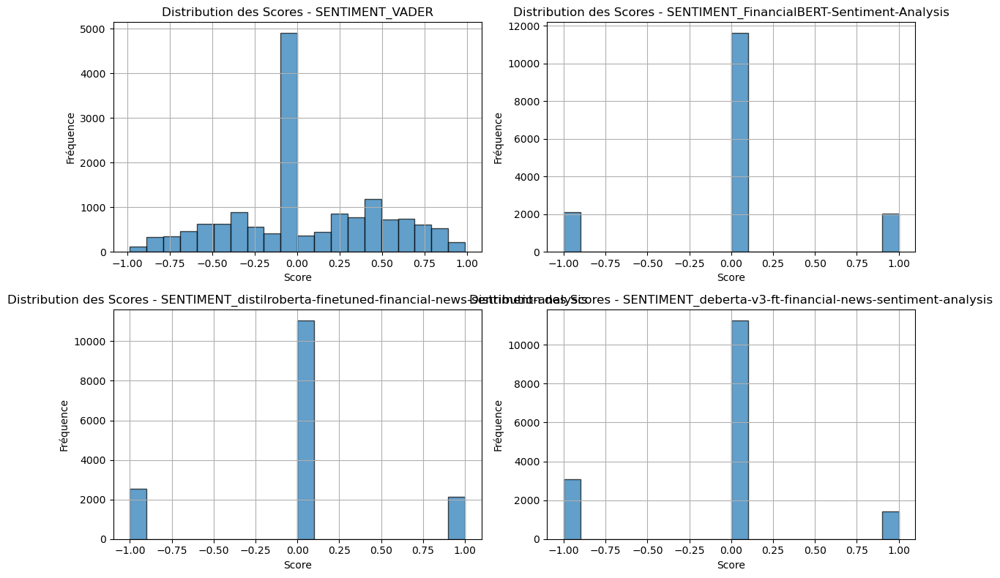
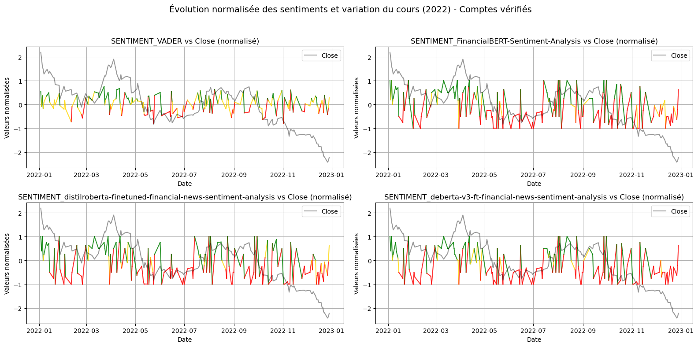

📊 Analyse exploratoire du sentiment#
Cette section a pour but de poser les premières bases d’une stratégie de trading fondée sur le sentiment.
Elle repose sur trois axes principaux :
Explorer la distribution des scores de sentiment, générés par quatre modèles :
VADER, FinancialBERT, DistilRoBERTa et DeBERTa.Prototyper une stratégie simple basée sur des seuils de sentiment :
lorsqu’un score dépasse un certain niveau, on entre en position ; sinon, on reste à l’écart (long / flat).Ajuster les hyperparamètres clés de cette stratégie :
choix du modèle, fenêtre de lissage, seuils d’achat et de vente.
Ce travail exploratoire nous permet d’évaluer si le signal issu de Twitter peut, même de façon rudimentaire, générer un comportement de marché exploitable.
Contenu de cette analyse#
Distribution des scores de sentiment
Le graphique ci-dessous montre la répartition des scores de sentiment produits par les différents modèles utilisés :
VADER (en haut à gauche) : score continu entre -1 et +1.
FinancialBERT, DistilRoBERTa, DeBERTa : scores discrets {-1, 0, +1}, avec un pic très marqué pour la classe neutre (0).
Cette distribution justifie notre décision de filtrer les tweets jugés trop neutres, c’est-à-dire dont le score absolu est inférieur à 0.1.

Filtrage des tweets peu expressifs
Nous éliminons les tweets dont le score absolu est inférieur à 0.1 sur plusieurs modèles, car ils n’ont pas de valeur exploitable dans une logique d’achat/vente.Agrégation journalière
Les scores sont ensuite moyennés par jour, séparément pour :les comptes vérifiés
les comptes non vérifiés
→ Ces deux groupes peuvent ensuite être combinés avec une pondération personnalisée (ex. : 25 % vérifiés / 75 % non vérifiés).
Standardisation des données
Avant toute comparaison ou visualisation combinée, les données de sentiment et les prix boursiers sont standardisés :
Chaque série (prix ou score de sentiment) est centrée autour de sa moyenne et réduite à un écart-type unitaire (formule : (x - μ) / σ).
Cela permet de visualiser les tendances relatives sur des échelles cohérentes, sans être influencé par les ordres de grandeur.
Cette standardisation s’applique à :
la variable
Close(prix journalier de Tesla),chaque score de sentiment combiné (par modèle).
Corrélation visuelle : sentiment vs prix
Nous comparons ici l’évolution standardisée des scores de sentiment à celle du cours de clôture de l’action Tesla.
Les courbes en gris représentent le prix de clôture standardisé, tandis que les traits colorés représentent le sentiment journalier, lissé par moyenne mobile.

Même si l’on observe quelques coïncidences ponctuelles entre variations de sentiment et mouvements du prix, aucune relation claire ou systématique ne se dégage visuellement.
➡️ Étudions maintenant si ces signaux peuvent alimenter une stratégie de trading concrète.